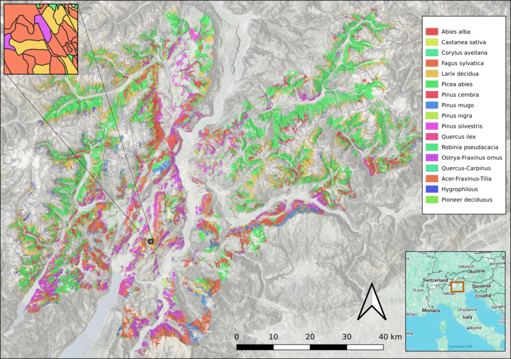
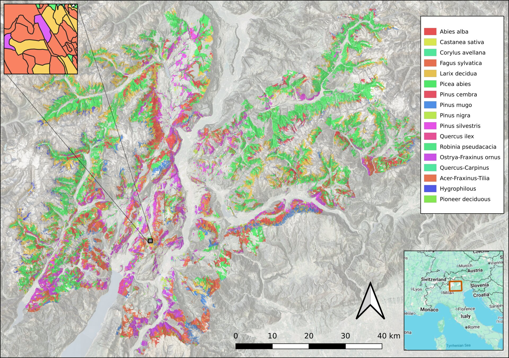
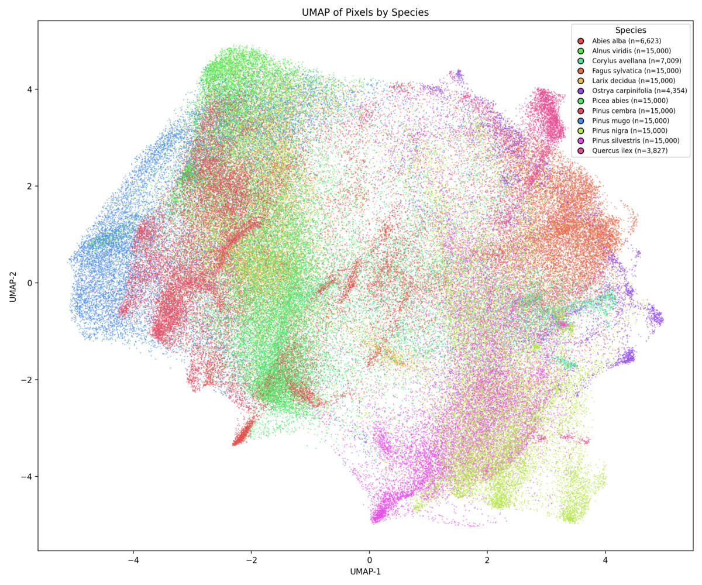

University of Cambridge
We use geospatial AI to create fine-grained, species-level maps of the world's ecosystems — from Alpine forests to tropical biomes — enabling scalable biodiversity monitoring and evidence-based conservation.
There is still no accurate, fine-grained, globally consistent map of the world's remaining natural and human-modified habitats. This data gap hampers conservation planning, biodiversity accounting, and efforts to track the effectiveness of restoration programmes worldwide.
Current global habitat maps lack the resolution and ecological detail needed for species-level conservation assessment.
Existing maps are expensive to update, dependent on input data quality, and cannot track rapid ecological changes.
Field surveys are costly and sparse. Traditional remote sensing requires extensive hand-crafted features and labelled training data.
Geospatial foundation models — large AI systems pre-trained on petabytes of satellite imagery — learn rich, information-dense representations of the Earth's surface. We leverage these embeddings to classify habitats and species at 10 m resolution with minimal labelled data.
Multi-sensor archives (Sentinel-1/2, global coverage)
Tessera & AlphaEarth pre-trained embeddings
Forest inventories, vegetation plots, field data
10 m resolution, annual coverage
10 m
Spatial resolution
18+
Tree species mapped
2
Foundation models tested
6+
Regional projects
From species-level mapping in the Italian Alps to continent-scale habitat classification across the tropics.

Foundation-model embeddings enable species-level tree mapping across 6,200 km² of mountainous terrain, substantially outperforming conventional satellite approaches.
Coming 2026
Integrating Tessera embeddings with the SynTreeSys plot network to produce the first harmonised, AI-driven habitat map of the Neotropics.
In Progress
Baseline habitat maps for Cumbria, the Cairngorms, and beyond — supporting 20–30 year landscape restoration programmes across Britain.
Embedding Structure
UMAP projections of Tessera embeddings reveal that the learned representations naturally separate tree species and genera without any ecological supervision. Conifer and broadleaf species form distinct clusters, reflecting functional and taxonomic groupings.
Explore the full analysis